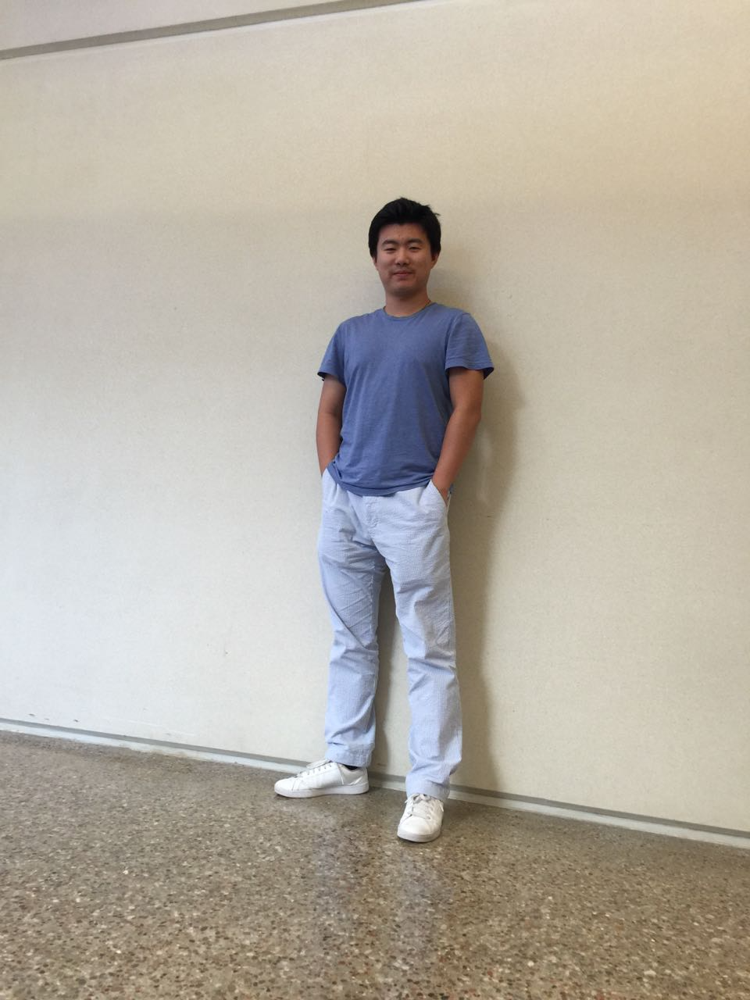
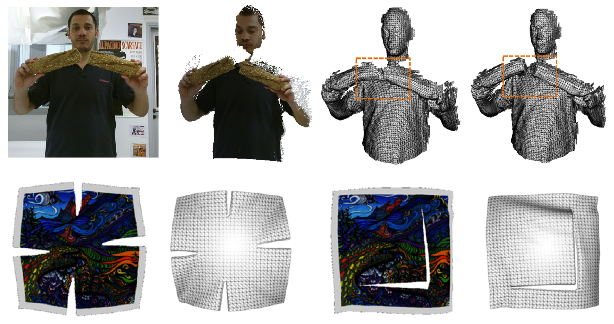
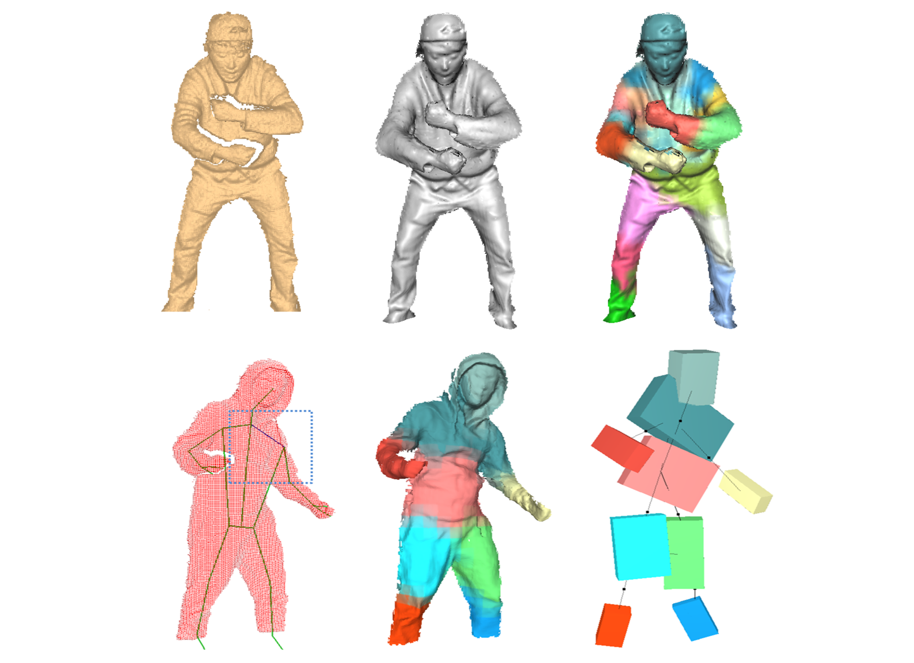
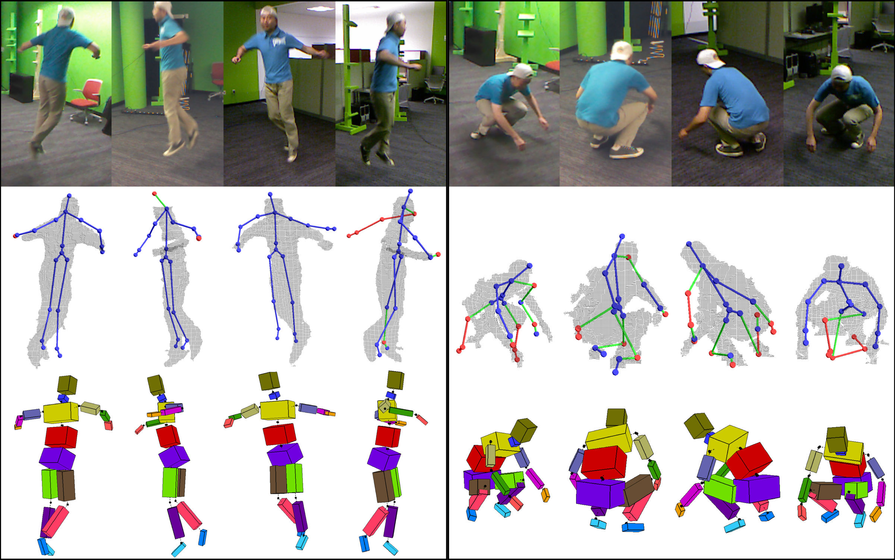
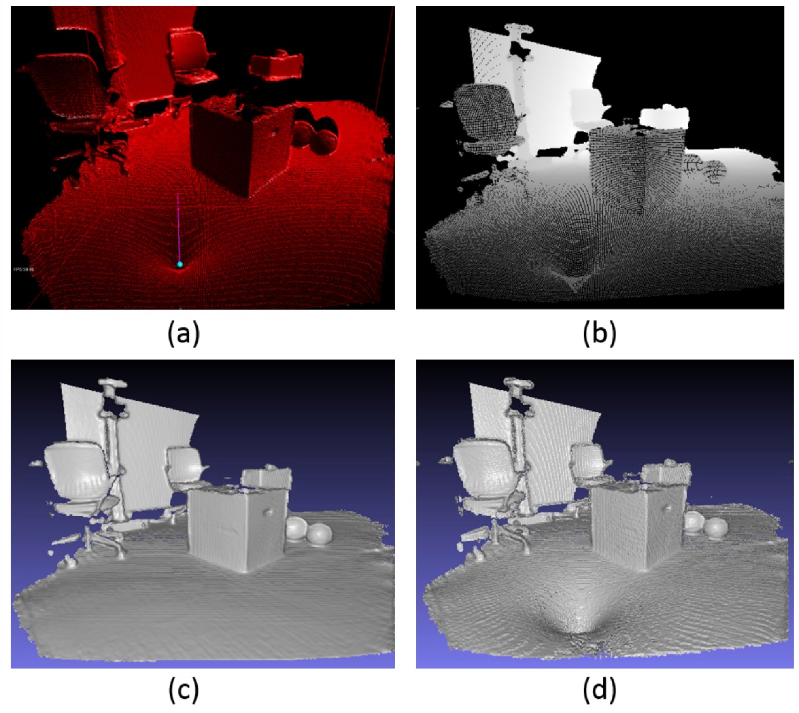
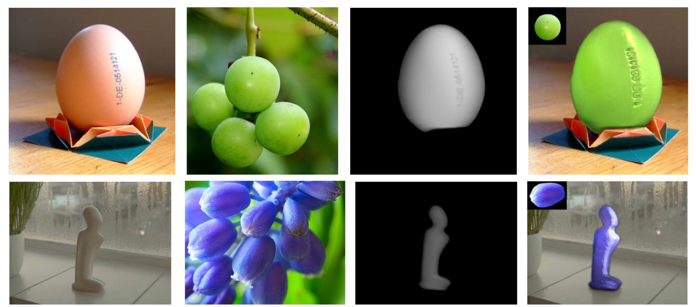

|  |
Chao Li
Reseach Scientist
Facebook Reality Labs Email: Chao.Li at fb dot com |
|
Previous Education: |
|
I am a Research Scientist at Facebook Reality Labs. Before joining Facebook, I did my Ph.D. at UTDallas, advised by Prof. Xiaohu Guo. During my Ph.D., I was fortunate to get an opportunity to intern at Facebook Reality Labs, Sausalito under the supervision of Dr. Tony Tung. Before I started my Ph.D., I interned at National Laboratory of Pattern Recognition under the supervision of Dr. Weiming Dong when I was a graduate student at Peking University.
My Ph.D. thesis research focus was real-time 3D reconstruction of dynamic scenes particularly in human bodies.
My current research aims to develop efficient and customized computing methods for challenging problems in VR/AR areas. |
| [2020] |
|
(July) One paper accepted to ECCV 2020! |
|
(June) Welcome to Miao Liu (Research Intern, Ph.D. from Georgia Tech)! |
|  | Chao Li and Xiaohu Guo, "Topology-Change-Aware Volumetric Fusion for Dynamic Scene Reconstruction", ECCV 2020. [PDF] [Supplementary] [Video] [Code] Computer Vision |
|  | Chao Li, Zheheng Zhao, and Xiaohu Guo, "ArticulatedFusion: Real-time Reconstruction of Motion, Geometry and Segmentation Using a Single Depth Camera", ECCV 2018. [PDF] [Supplementary] [Video] [Code] Computer Vision |
|  | Liang Shuai, Chao Li, Xiaohu Guo, Balakrishnan Prabhakaran, and Jinxiang Chai, "Motion capture with ellipsoidal skeleton using multiple depth cameras", in IEEE Transactions on Visualization and Computer Graphics 2017, (Presented at IEEE VR 2016 Conference). [PDF] [Video1] [Video2] [Video3] [Video4] [Code] Computer Vision |
|  | Yuan Tian, Chao Li, Xiaohu Guo, and Balakrishnan Prabhakaran, "Real Time Stable Haptic Rendering Of 3D Deformable Streaming Surface", ACM on Multimedia Systems Conference (MMSys), 2017. [PDF] [Video] Graphics |
|  | Chao Li, Weiming Dong, Ning Zhou, Xiaopeng Zhang, and Jean-Claude Paul, "Translucent material transfer based on single images", SIGGRAPH Asia 2011 Sketches，2011. [PDF] Graphics |
| Chao Li, Fan Yang, Bing Li, and Teng Guan, "MagicPainter 神笔马良", an application program by which static elements and physics elements (will be effected by forces) can be drawn on the canvas. [Video] Graphics |
|